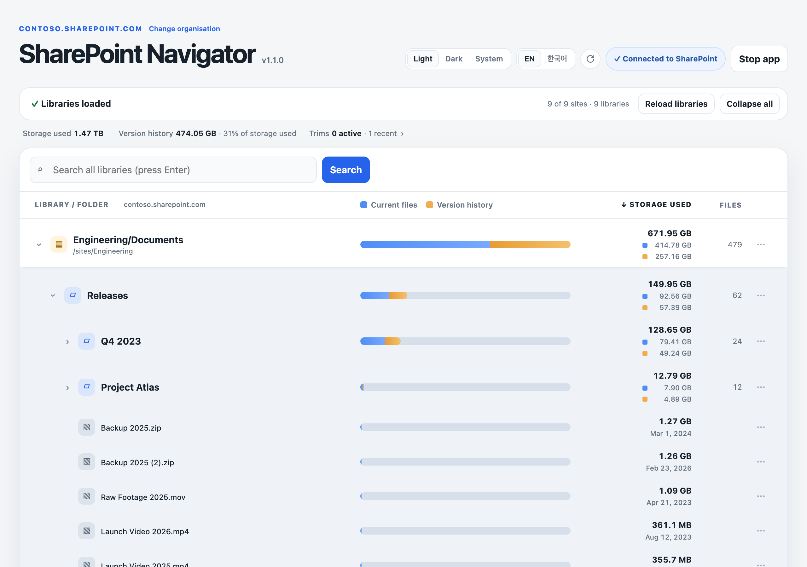
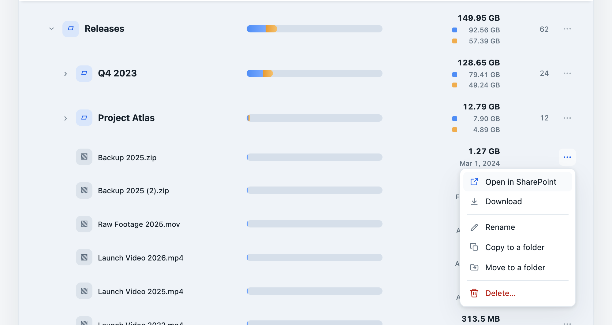
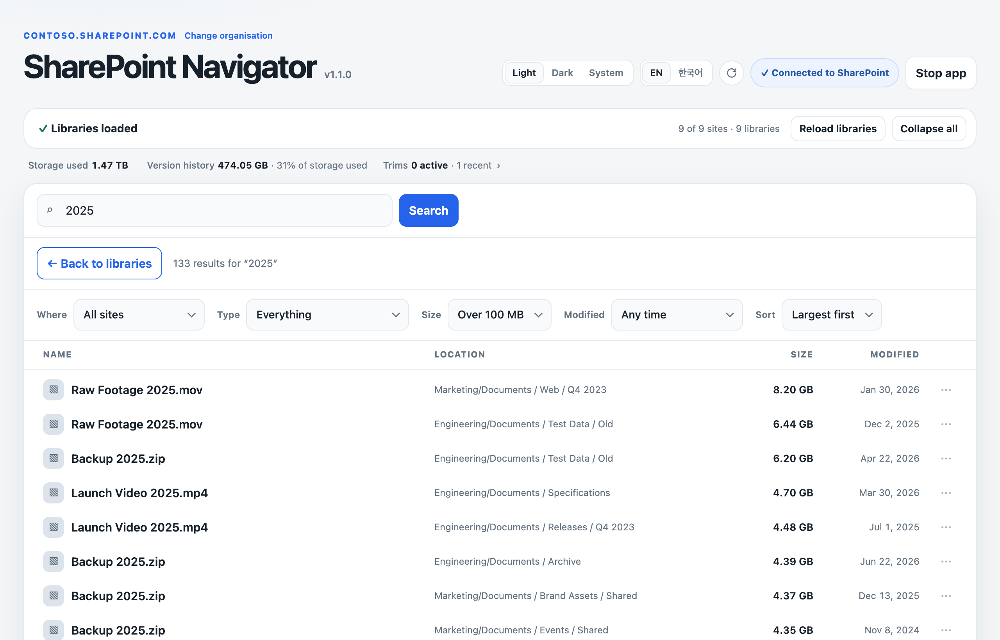

Every site, one tree
Each site’s Documents library is one row. Open it to see its folders, 200 at a time, even in libraries with tens of thousands of items.
Every site’s Documents library in one tree, with how much is current files and how much is version history. Find any file across all sites, then tidy up. A small app on your own computer.

Each site’s Documents library is one row. Open it to see its folders, 200 at a time, even in libraries with tens of thousands of items.
Every bar splits storage into the files as they are now and the old versions SharePoint keeps. One scale for all rows, so big folders stand out.
Filter by site, type, size and date. Sort by size to find the biggest files in the whole organisation.
With a preview first, and a check that nobody changed the item meanwhile. Copies never overwrite; deletes go to the recycle bin after several confirmations.
The same three rules SharePoint offers, with the site’s last trim, a typed confirmation and a stop button.
No PowerShell, no scripts, no agents. One app, one Microsoft sign-in, and it stops when you close its tab.
Each row ends with a small ⋯ button. Click it, or right-click anywhere on the row, to see what you can do with that item. The menu shows only what fits the row.
With the keyboard: Tab to the ⋯ button and press Enter, move with the arrow keys, and press Esc to close.


One search through every site. Show in tree opens each folder down to the result and highlights it, so renaming, moving or checking its folder’s size is one click away.
It works with your organisation’s files, so it is built to be boring in the right ways.
Your Microsoft 365 admin registers a small Entra app. It takes about five minutes and needs no secret.
Sites.Read.All, Sites.ReadWrite.All; SharePoint AllSites.Read, and AllSites.FullControl for trims. Grant admin consent.Tip: put a file named contoso_clientid.txt with the ID next to the app, and staff are never asked. The full site list and trims need the SharePoint Administrator role.
Free for macOS and Windows. Needs Microsoft 365 with SharePoint Online.
Intel Macs: run from source (see GitHub).
64-bit. No installer: unzip and run.
Any Mac (Intel too), Windows or Linux with a browser.
sharepoint-navigator.command.pip install -r requirements.txt, then python sharepoint-navigator.py.No installer and no window of its own: the app lives in your browser. It’s one app file, plus a small settings folder in your user folder.
~/.sharepoint-navigator and move that folder to the Trash (saved tenant, client ID and sign-in).%USERPROFILE%\.sharepoint-navigator in File Explorer's address bar and delete that folder (saved tenant, client ID and sign-in).